Exercise 2: Use the Xamarin.Android Designer to add controls to a UI
Duration
10 minutes
Lab goals
The primary goal of this lab is to create a new Android Application and design the user interface.
You will become familiar with the basics of the Android designer integrated into Xamarin Studio.
The UI will display the text "Enter a Phoneword" as a prompt for the user. There will also be a
text-entry area, a "translate" button, and a "call" button. This part only creates the UI; subsequent
parts will add behavior. The finished user interface will look like this:
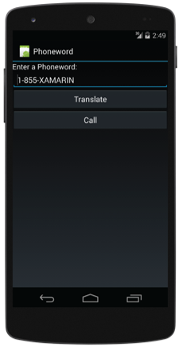
The user interface will be a single layout with several child elements. The table below shows the
control types you will use and the properties you will need to set:
| Type |
Property |
Value |
TextView
|
|
|
EditText
|
|
@+id/PhoneNumberText |
1-855-XAMARIN |
|
Button
|
|
@+id/TranslateButton |
Translate |
|
Button
|
|
|
Required assets
The provided Part 02 Resources folder contains a completed version of the lab in the
Part2.Completed folder if you would like to check your work.
Exercise challenge
Use the information in the worksheet to accomplish the goal outlined above.
Alternatively, you can use the step-by-step instructions provided below to work through the exercise.
Tip: If you are doing this exercise live in a session, make sure to make good use of the instructor,
they are online to answer any questions you have!
Steps
Create the Phoneword project
- Launch Xamarin Studio.
- Click File > New > Solution... or click New Solution... from the Welcome Page.
- Select C# > Android in the tree on the left.
- Select Android Application in the list of templates on the right as shown below:
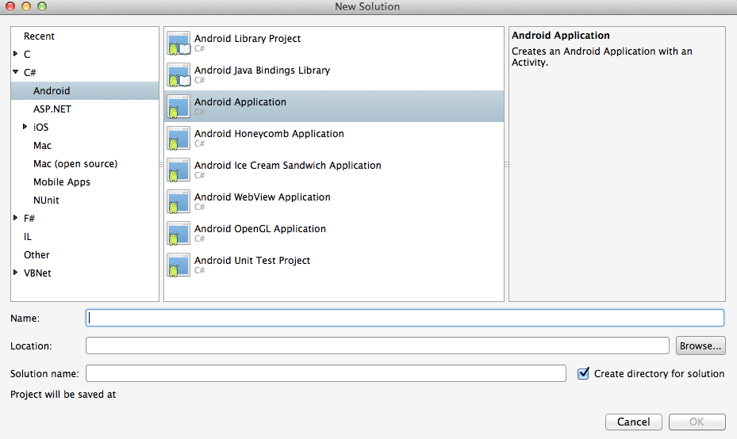
- Name the project and solution Phoneword and place it into an accessible location, for example your Documents folder.
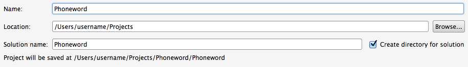
- Click OK to create the project.
- Build the application to make sure it compiles successfully.
Working with the Android Designer
- Double-click on Resources\layout\Main.axml to open the Android Designer.
- The Android Designer window will appear and display a single screen. The designer works much like other designers you may have used:
you can drag controls from the Toolbox into your layout and set properties using the Properties grid. The key areas of the Designer are
highlighted below.
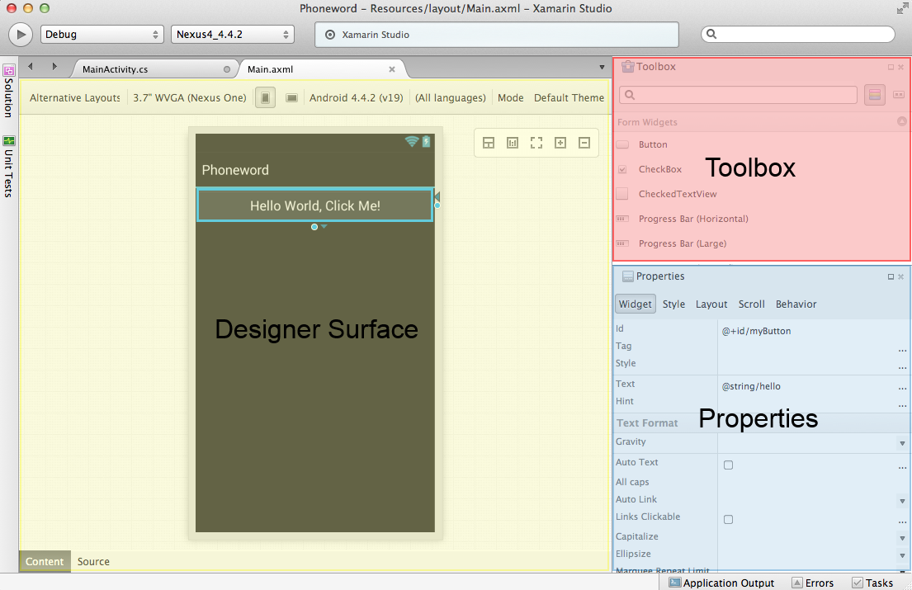
Here are a few notes about the designer
-
To add controls to the layout, identify the control in the toolbox and drag-and-drop it onto the design surface.
-
You can cancel a drag by pressing ESC while you are dragging an element.
-
You can select a single element by clicking on it - this changes the property grid to display properties relevant to that selected item.
-
There is a Document Outline window available (View > Other Windows > Document Outline)
which displays all of the elements for the screen in a tree structure - this is often easier to use for selection purposes.
-
When an item is selected, there are two modes the designer can be in: drag/resize and margin/spacing.
Single-click on the element to toggle between modes. The mode we want to work in for this session is always
Drag/Resize - this allows you to move and resize the element if needed. If you find yourself in
margin/spacing mode, just click on the element to switch back. You can easily distinguish between these
modes through the adornments drawn on top of the element:
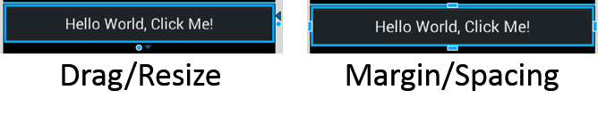
Create the Phoneword design
We will be creating the following design - you can compare the following image against your design at
any time to make sure you are on track.
-
The Android Application project template includes a button which you will not need. Delete the button from the UI by
either right-clicking on it and using the Delete option or selecting it and then pressing the delete key on your keyboard.
-
The template also includes some code-behind that you will not need. Open MainActivity.cs
and delete the following three lines:
int count = 1;
Button button = FindViewById<button>(Resource.Id.MyButton);
button.Click += delegate { button.Text = string.Format("{0} clicks!", count++); };
Return to the UI Designer when you are done.
-
Locate the Text (Large) control in the Toolbox and drag one into the Designer layout area.
This will add a
TextView with a large font size to your layout.
The width will be set to match_parent which means the TextView will span the entire
width of the layout. The height will be wrap_content which will make it just tall enough to contain
the text content. Both of these default values are reasonable and you do not need to change them.
-
Double-click the
TextView and change the text to "Enter a Phoneword:" it should look similar
to the following when complete:
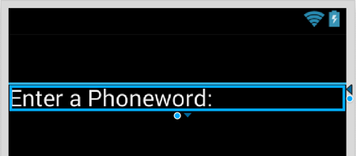
-
With the
TextView selected, switch to the Properties pad and select the Style tab.
Expand the Text Appearance section with the arrow button and change the textSize
to 17sp (sp stands for scale-independent pixel which is the recommended unit
for text elements since it is scaled by the user's text size preference).
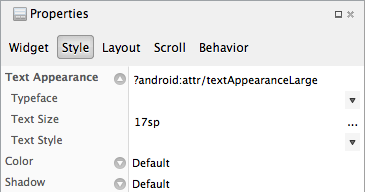
-
Locate the Plain Text control in the Toolbox and drag one into the Designer layout area
positioned below the existing
TextView. This will add an EditText control to your layout.
The default values for the width and height are reasonable and you do not need to change them.
-
With the
EditText selected, switch to the Properties grid and make the changes to the
id and text properties shown below, you can also refer to the property change list at the
start of this document.
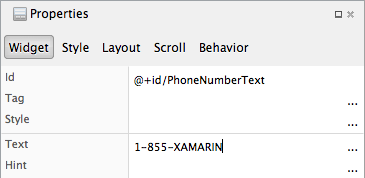
-
Locate the
Button control in the Toolbox and drag one so it is positioned below the EditText.
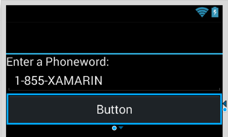
-
In the Property grid, make the following changes:
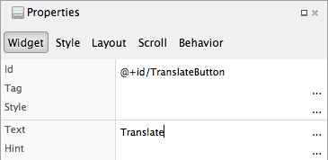
-
Drag another
Button from the Toolbox and position it below the Translate button.
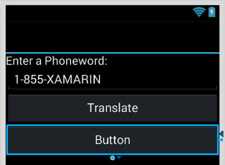
Note: another way to accomplish this is to use Copy (Ctrl+C) and Paste (Ctrl+V) to create a duplicate
of the Translate Button and then change the property values.
-
In the Property grid, make the following changes:
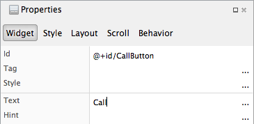
-
File > Save All to save the changes.
Test the design in the emulator
-
In Xamarin Studio, Use the Xamarin.Android toolbar to select an emulator.
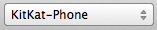
-
Start debugging the application with the Play button.
-
The Android Emulator you selected should show up after several seconds, and if everything has gone well your
app will display. Verify that it looks correct based on the original design.
- Press the Stop button in Xamarin Studio to halt the app.
Summary
In this lab, we have built the user interface for our first real Android application with Xamarin Studio.
You have seen how the designer can be used to add new controls to a screen and edit their properties.
You have also seen how to launch the application in the Android emulator.
If you have extra time, try exploring some of the other controls in the Toolbox.